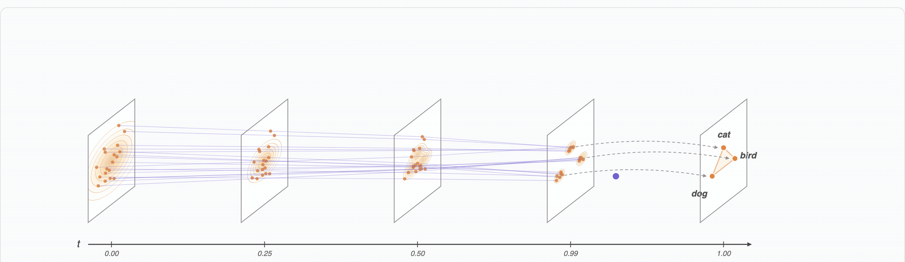
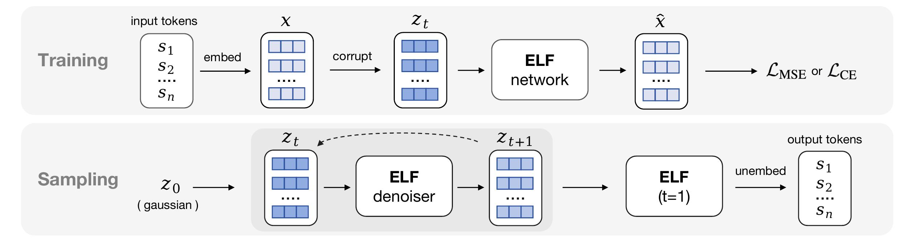
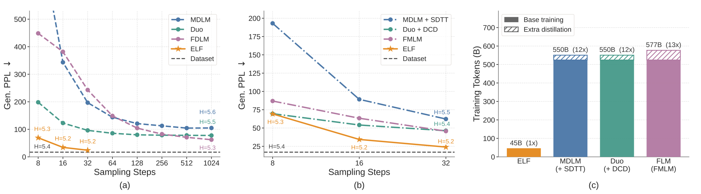

ELF: Embedded Language Flows
A Continuous Diffusion Language Model
via Flow Matching
MIT
github.com/lillian039/ELF
Diffusion Language Models
Diffusion / flow models dominate continuous data (images, video).
Today's leading DLMs are discrete — operating on tokens.
or just under-explored design?
ELF: Stay Continuous Until the End

Denoise in continuous embedding space · discretize only at t = 1 · one shared-weight network.
Flow Matching in Embedding Space

Flow Matching in Embedding Space
1. Encode discrete tokens s into continuous embeddings x using a frozen pretrained T5 encoder.
2. Interpolate between data and Gaussian noise (rectified flow):
zt = t·x + (1−t)·ε, ε ~ 𝒩(0, I), t ∈ [0,1]
3. Train a network xθ(zt, t) to predict the clean embedding x (x-prediction):
ℒMSE = 𝔼t, x, ε ‖ xθ(zt, t) − x ‖²
Shared Denoiser–Decoder
Training: one network handles two modes via a binary mode token.
- Denoise mode (t<1): MSE loss on embedding
- Decode mode (t=1): CE loss via unembedding W
ℒCE = CrossEnt(W·xθ(z̃), s)
Mix in a single batch: 80% MSE + 20% CE.
Inference: ODE / SDE sampler in embedding space.
- Start from z0 ~ 𝒩(0, I)
- Iteratively denoise zt → zt+Δt
- At t = 1: switch to decode mode, project to logits, argmax → tokens
No separate decoder at inference.
System-Level Comparison

Lower Gen. PPL with fewer steps · beats distilled baselines without distillation · 10× fewer training tokens.
Generation in Action

ELF-B (105M) generating text by iterative denoising in embedding space.
Thank you!
for diffusion-based language modeling.
github.com/lillian039/ELF